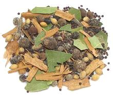

 |
Pickling SpiceEuro-American | ||||
| Makes: Effort: Sched: DoAhead: |
3-3/4 oz * 10 min Yes |
A spice mix used worldwide with minor variations, forEuro-American style pickling of both vegetables and meats, like corned beef. Adjust to your preference. This recipe doesn't quite fill a 4 ounce spice jar. | |||
|
|
----- 1 2 1 2 6 ----- 1 2 1 ----- 1 |
--- T T T t --- t in --- t |
-- Whole Spices Black Peppercorns Mustard Seeds (1) Allspice Berries Coriander Seed Cloves -- Crushed Spices Chili Flake (2) Bay Leaves Cinnamon (3) -- Ground Spices Ground Ginger |
Make: - (10 min) Some recipes add a little grated nutmeg for a warmer flavor, and some recipes omit the Black Peppercorns.
|